PICKERING (ピカリング)
カートリッジ等で知られるアメリカのメーカー。「スタントン」と密接な関係にある。ただし現在はすでにカートリッジの生産からは撤退しており、国内では長年、代理店であった東志が2008年4月に販売の停止を発表している。
�T.カートリッジ
MI型のイメージが強いが、アナログディスク時代後半の上位機種はMM型だった。しかし2000年の時点では、MI型のＤＪモデルが最上位機種となっていた。
1.MM型
�@V15シリーズ（�V型）
ピカリングの代表的なシリーズ。�W型でMI型となる。
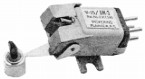
(V-15/AM-3)
�AXSV/XUVシリーズ
1970年代後半からの上位機種。1993〜94年頃販売終了。
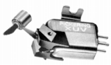
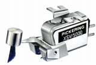
(左 XUV/4500Q 中央 XUV/5000)XSV/3000 XSV/4000 XUV/4500Q XSV/5000
�BTMZシリーズ
ローインピーダンス型MMのXLZ/7500Sに対し、ミディアムインピーダンス型として設計された製品。1996〜98年頃生産終了。
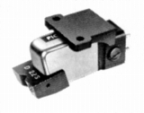
(TMZ-22S)�CV15シリーズ（�X型？）
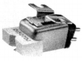
(V15/DJ)�Aその他
2.MI型
�@V15シリーズ（�W型）
ピカリングの代表的なシリーズ。�VまではMM型だった。1986年頃姿を消した。
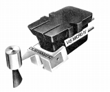
(V15 MICRO�W/AME)V15 MICRO�W/AT V15 MICRO�W/AM V15 MICRO�W/AME
�AＸV-15シリーズ
V15シリーズの上位グループ。やはり1986年頃大半のモデルが姿を消した。625のみ残ったが2000年の時点では625DJのみとなった。
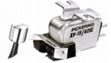
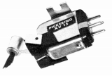
(左 XV15/625E 右 XV15/1200E)XV15/150DJ XV15/200E XV15/400E XV15/625E XV15/625E2 XV15/625DJ XV15/750E XV15/1200E
�BUV-15シリーズ
型番末尾の「Ｑ」は4チャンネル対応機の意味？1983年頃消滅。
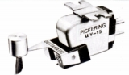
(UV15/2400Q)3.T4P規格カートリッジ
�@IM型
T4Pプラグイン方式で一般的な針圧1.25gではなく、1gで設計しておりピカリングらしさが出ている。1996〜98年頃生産終了。
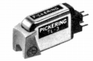
(TL-3)�AMM型
MM型の機種はT4Pプラグイン方式と一般のシェル共用型。
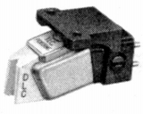
(TLC)
�W.その他
シェル1点、カートリジッジキーパー2点、スタイラスタイマー2点。